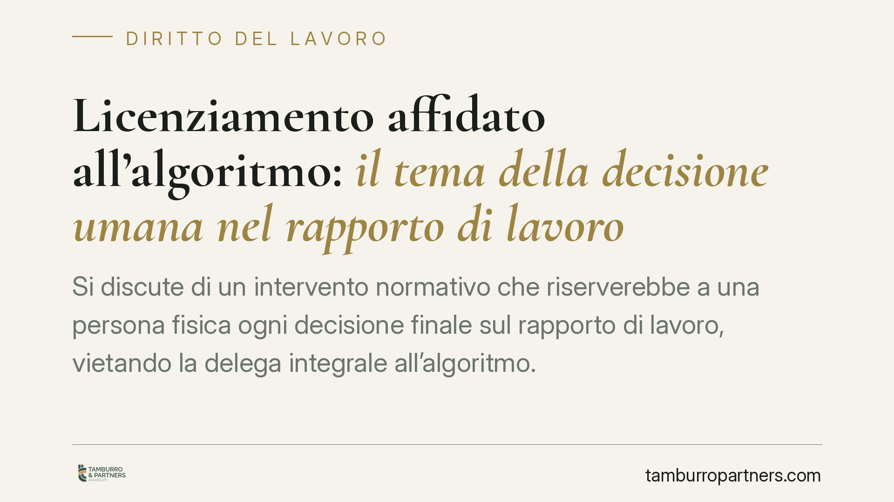

Licenziamento affidato all'algoritmo: il tema della decisione umana nel rapporto di lavoro
Si discute di un intervento normativo che riserverebbe a una persona fisica ogni decisione finale sul rapporto di lavoro, vietando la delega integrale all'algoritmo. Il tema tocca licenziamenti, provvedimenti disciplinari e valutazioni. Qui inquadriamo lo stato della questione, i riferimenti già vigenti sul controllo umano e le conseguenze sul piano dei rimedi, con le cautele dovute su una disciplina ancora in via di consolidamento.

Una premessa necessaria sullo stato della fonte
Il dibattito prende spunto dal cosiddetto d.lgs. 179/2026, presentato come norma di adeguamento interno alla disciplina europea sull'intelligenza artificiale, con decorrenza indicata al 23 ottobre 2026 e con un art. 41 dedicato alla riserva della decisione finale alla persona fisica.
È doveroso un avvertimento. Si tratta di una fonte datata nel futuro e non riscontrabile, allo stato, su Gazzetta Ufficiale e Normattiva. Non possiamo quindi presentarla come diritto vigente e consolidato. Trattiamo il testo come indicazione di tendenza, da confermare su fonte ufficiale prima di qualsiasi utilizzo operativo. Chi legge non consideri acquisito ciò che non è ancora verificabile.
Il quadro europeo di riferimento
Il contesto in cui si colloca questa evoluzione è quello del Regolamento (UE) 2024/1689, noto come AI Act. Anche in questo caso raccomandiamo la verifica puntuale sul testo ufficiale: numero, articolato e portata applicativa vanno riscontrati direttamente, perché il perimetro esatto degli obblighi in materia di lavoro incide sulle conclusioni.
L'impianto europeo classifica come ad alto rischio diversi sistemi impiegati nella gestione del personale e introduce principi di sorveglianza umana. Da qui deriva la direzione, già percepibile, verso un presidio della persona fisica sulle decisioni che producono effetti giuridici sul lavoratore. Il principio non è l'abolizione degli strumenti automatizzati, ma il loro inquadramento come supporto, non come sostituto del decisore.
La distinzione che conta: supporto istruttorio e decisione finale
Il punto centrale, al netto delle verifiche sulla fonte, è una distinzione netta.
L'algoritmo può raccogliere dati, segnalare anomalie, ordinare informazioni: è attività istruttoria, utile e lecita. Altra cosa è la decisione finale sul rapporto — licenziamento, sanzione disciplinare, valutazione con effetti sulla posizione del lavoratore — che richiede una persona fisica dotata di potere effettivo e autonomo.
Il requisito del potere effettivo e autonomo non si soddisfa con una ratifica formale. Non basta un responsabile che firma ciò che il sistema ha già determinato. Serve una valutazione reale, con capacità di discostarsi dall'esito automatizzato e di motivare la scelta. La delega sostanziale della decisione alla macchina, mascherata da avallo umano, è esattamente ciò che il principio intende impedire.
Va ribadito per evitare equivoci: la norma, nella lettura che ne viene data, non vieta l'intelligenza artificiale nei processi HR. Vieta la delega della decisione finale.
Le conseguenze sul piano dei rimedi
Si afferma che il licenziamento adottato in violazione di questo principio sarebbe nullo. Qui occorre precisione, perché dalla nullità non discende automaticamente un unico esito.
Il regime rimediale va ancorato alla disciplina applicabile al singolo rapporto. Per i licenziamenti nulli, l'ordinamento prevede in via generale la tutela reintegratoria, con il risarcimento correlato: il riferimento è all'art. 18 della L. 300/1970 per i rapporti che vi ricadono e all'art. 2 del d.lgs. 23/2015 per gli assunti dal 7 marzo 2015. Il rimedio concreto dipende dunque dal regime di tutela del lavoratore interessato, non da una formula unica.
Rilevante anche il profilo dei termini. Il licenziamento nullo segue un regime di impugnazione distinto rispetto a quello annullabile o inefficace: non è soggetto al termine di decadenza di 60 giorni previsto dall'art. 6 della L. 604/1966, operando i termini di prescrizione ordinari. È una differenza di peso, che amplia la finestra di tutela del lavoratore e va considerata dal datore in sede di gestione del rischio.
Implicazioni pratiche per il datore di lavoro
Se l'orientamento troverà conferma nel testo definitivo, l'impatto organizzativo sarà significativo. Ogni processo in cui un sistema automatizzato incide su decisioni rilevanti andrà ripensato per garantire e documentare l'intervento umano effettivo. Il consenso del lavoratore, secondo la lettura prospettata, non varrebbe a derogare al divieto: non è una clausola contrattuale a sanare la delega.
Il rischio non è soltanto economico. È la tenuta stessa del provvedimento, con esposizione reintegratoria e tempi di contestazione più ampi.
Cosa fare in concreto
- Mappate i sistemi automatizzati in uso nei processi HR, distinguendo quelli meramente istruttori da quelli che incidono su decisioni sul rapporto.
- Documentate l'intervento umano: verbalizzate la valutazione del decisore, le ragioni della scelta e l'eventuale scostamento dall'esito del sistema.
- Rivedete modelli procedurali e clausole contrattuali per escludere qualsiasi delega sostanziale della decisione finale alla macchina.
- Formate le funzioni HR e i responsabili sul confine tra supporto algoritmico e decisione riservata alla persona fisica.
- Monitorate la pubblicazione ufficiale della norma su Gazzetta Ufficiale e Normattiva prima di assumere scelte basate sul testo in discussione.
---
*Contributo informativo a cura di Tamburro & Partners - Avv. Giuseppe Tamburro. Non costituisce parere legale.*
Ogni storia di lavoro ha i suoi tempi.
Se gestisci HR e vuoi un confronto su contenzioso, ispezioni o licenziamenti, scrivi allo studio. Ti rispondiamo entro un giorno lavorativo.